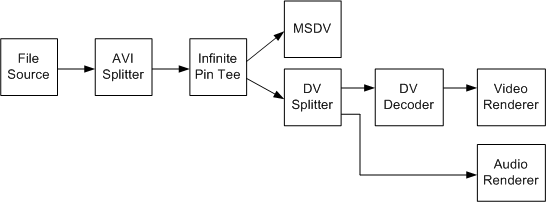

[The feature associated with this page, DirectShow, is a legacy feature. It has been superseded by MediaPlayer, IMFMediaEngine, and Audio/Video Capture in Media Foundation. Those features have been optimized for Windows 10 and Windows 11. Microsoft strongly recommends that new code use MediaPlayer, IMFMediaEngine and Audio/Video Capture in Media Foundation instead of DirectShow, when possible. Microsoft suggests that existing code that uses the legacy APIs be rewritten to use the new APIs if possible.]
To transmit a type-1 file while previewing the file, use the filter graph shown in the following diagram.

Filters in this graph include:
Build this graph as follows:
ICaptureGraphBuilder2 *pBuilder; // Capture graph builder.
IBaseFilter *pDV; // DV capture filter (MSDV)
// Initialize pDV (not shown).
// Create and initialize the Capture Graph Builder (not shown).
// Add the Infinite Pin Tee filter to the graph.
IBaseFilter *pTee;
hr = CoCreateInstance(CLSID_InfTee, 0, CLSCTX_INPROC_SERVER
IID_IBaseFilter, reinterpret_cast<void**>)(&pTee));
hr = pGraph->AddFilter(pTee, L"Tee");
// Add the File Source filter to the graph.
IBaseFilter *pFileSource;
hr = pGraph->AddSourceFilter(
L"C:\\YourFileNameHere.avi",
L"Source",
&pFileSource);
// Add the AVI Splitter filter to the graph.
IBaseFilter *pAviSplit;
hr = CoCreateInstance(CLSID_AviSplitter, 0, CLSCTX_INPROC_SERVER
IID_IBaseFilter, reinterpret_cast<void**>)(&pAviSplit));
hr = pGraph->AddFilter(pAviSplit, L"AVI Splitter");
// Connect the file source to the AVI Splitter.
hr = pBuilder->RenderStream(0, 0, pFileSource, 0, pAviSplit);
if (FAILED(hr))
{
// This is not an AVI file.
}
// Connect the file source to the Infinite Pin Tee.
hr = pBuilder->RenderStream(0, &MEDIATYPE_Interleaved, pAviSplit, 0, pTee);
if (FAILED(hr))
{
// This is not a type-1 DV file.
}
// Render one stream from the Infinite Pin Tee to MSDV, for transmit.
hr = pBuilder->RenderStream(0, 0, pTee, 0, pDV);
// Render another stream from the Infinite Pin Tee for preview.
hr = pBuilder->RenderStream(0, 0, pTee, 0, 0);
If you do not want preview, simply connect the file source to the MSDV filter:
hr = pBuilder->RenderStream(0, &MEDIATYPE_Interleaved, pFileSource, 0, pDV);
Â
Â